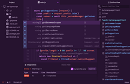

Un IDE, ça sert à quoi?
définition :
Integrated Development Environment (en français « environnement de développement »), est un logiciel qui rassemble des outils permettant de développer d’autres logiciels tels que des applications mobiles, des logiciels pour ordinateur ou consoles de jeux, des sites web, etc ; ainsi que de réaliser des librairies ou des frameworks, c’est-à-dire des morceaux de code qui pourront être sauvegardés et réutilisés dans d’autres programmes.
Les outils d’un IDE peuvent être :
 un éditeur de code intelligent (coloration, autocomplétion, mise en forme) ; un simulateur (logiciel permettant de tester l’exécution de son logiciel) ; un compilateur (qui va transformer le code source rédigé par le développeur en code binaire, composé de 0 et de 1 uniquement) ; un débogueur (fonctionnalité d’aide à la correction de bugs), etc.
Il existe de nombreux IDE. Certains permettent de développer pour un système d’exploitation spécifique, d’autres sont polyvalents.
NOTRE TOP 3
Parmi les nombreux IDE, nous en avons sélectionné, subjectivement, trois. Cliquez pour découvrir plus de caractéristiques sur chacun:
ATOM IDE
Atom est une application de bureau construite avec HTML, JavaScript, CSS, and Node.js integration. Il tourne sur Electron, un framework pour construire des applications multi-plateformes en utilisant les technologies web.